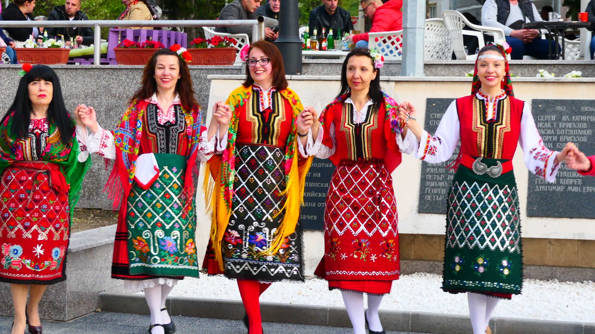
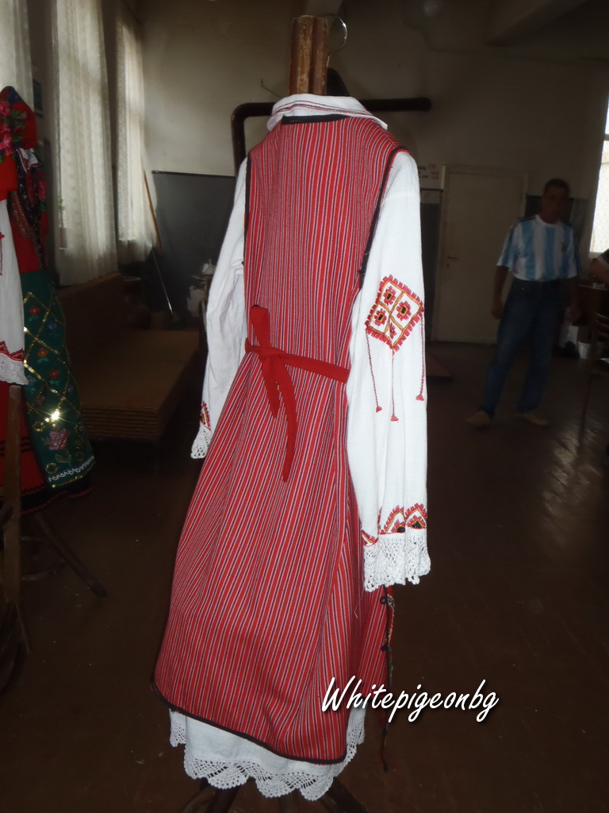
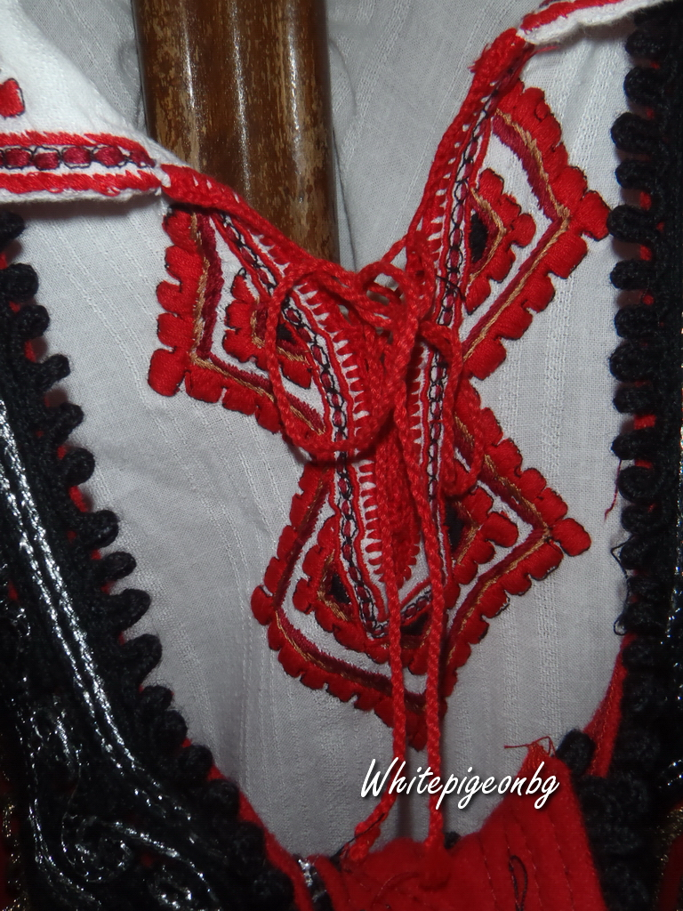
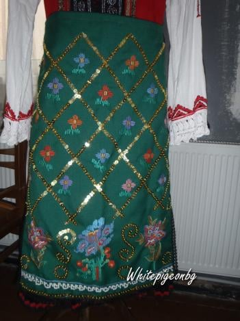
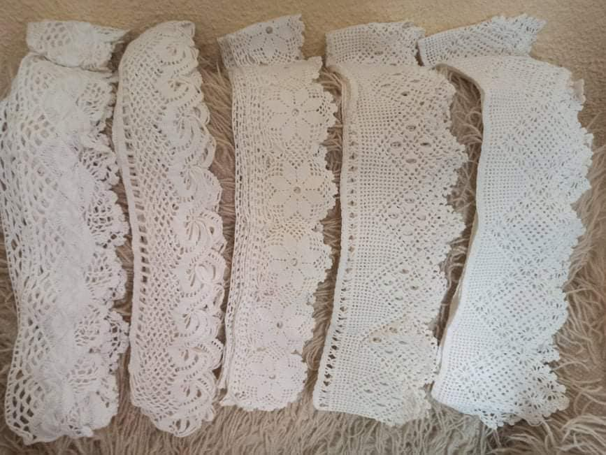
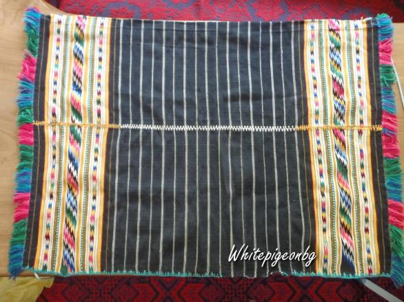

Народната носия е връзка с миналото, но тя носи послание към днешното, а и към бъдещите поколения. За създаването й са вложени много труд и въображение, големи умения и майсторство, за да стане нещо наистина впечатляващо със своето многообразие от цветове и багри, които са така подредени, че излъчват истинска хармония, хармония, която е радост за очите, и доставя истинска естетическа наслада.
Женската якорудска носия се състои от кошуля (риза), фустан или забун, престилка и кушак (забрадка).

Фустана е безръкавна горна женска дреха, без пазвена или с четвъртита пазвена извивка, отворена отпред до долу. Носена с различна дължина от средата на прасците до средата на коленете. В кръста е рязана. Горната част е силно прилепнала до тялото, а долната е силно надиплена отзад и в страни, т.е. фустанът е нагънат на плисета. Обикновено са шити от домашен четворен тупан шаяк, по-късно от фабрична вълнена материя.
Фустан

Зъбуна е безръкавна горна женска дреха, която е шита от “аладже” – домашна лита тъкан от тънко изпредена вълнена прежда. Зъбуна е прав, отворен до долу и е с прихващане. Като от кръста надолу от двете страни има вметнато по две силно „пернати” триъгълни клина, които придават особен шик на дрехата. Украсата на зъбуна е много семпла. Всички ръбове са обточени с черен гайтан, а пазвената извивка с платеници и ленти от гайтани и сърмен орнамент.
Забун
Кошулята (ризата) е една от главните съставки в якорудския костюм. Женската кошуля е туникообразна. Гърбът и предницата са от едно платно, наричано „стано”, което съобразено с желаната дължина се прегъвало на две и от една страна на прегъвката изрязвали кръгъл отвор за главата, който се спускал по средата на платното в дълбок пазвен разрез. Ръкавите са прави, широки от по две платна. Якичката на старата якорудска кошуля е обикновено столче от двойно парче платно, широко около два сантиметра. Обикновено платното за женските кошули е било кенарено. За разлика от горните дрехи, които обикновено са шити от терзии, кошулите са кроени и шити от самите жени, и то разбира се на ръка. Шито е здраво с единични и двойни шевове. Особено внимание се обръщало на шева на долния ръб. Украсата на кошулите обикновено е съсредоточена по яката, пазвата, ръкавите и полите.
Кошуля
Престилката е неотменна съставка в женския костюм на якорудската народна носия. И при мюсюлманите и при християните всички са украсени с вертикални шарки, като орнамента е съсредоточен преди всичко встрани в две вертикални широки ленти, наричани „глави” и при едните и при другите. Характерна украса за всички престилки са „китовете” – гъсти ресни от всички прежди на вътъка, които са наредени по два странични ръба на престилката.
Престилка
Друга част от якорудската носия е кърпата за глава. Най-старите кърпи за глава, познати на днешните възрастни якорудчанки, били „кавраците” – тънки копринени кърпи, целите на червени и жълти „кафезе”(кутийки). Почти заедно с тях се появяват и кушаците – квадратни кърпи от тънка вълнена материя с редки ресни по краищата. Кушаците били алени, тъмночервени, оранжеви, жълти и зелени.
Мъжкия костюм не се е развивал във времето, а е оставал един и същ. Той се състои от мъжка риза, наречена кошуля, потури, пояс и елек.

Tрадиционната женска якорудска носия при мюсюлманите се състои от няколко елемента. Първият са дълги гащи с плетени тентени на една игла. Следва кошулята с тентени на ръкавите и везана с копринени конци. Третият елемент е читипката, след което са плетените вълнени чорапи. Кошаците или забрадките са за разкош. Задължително е към носията да има и парленти, което е кърпата за закриване на косата. Парлентите са украсени с аспри – също ръчно правени. Има и китка, без която девойката не може да излезе. Задължително трябва да има и кърпа за стомната. Носиите може да са от коприна, от кадифе, задължително обаче е всичките им части да са в един тон”.

Старинните якорудски чорапи обикновено са плетени гладко с много ограничение прилижение на плетки и то обикновено при завършека. Но всички даровни чорапи са били шарени. Шарели са ги при самото плетене с домашна прежда и клабоданъ(сърма). Женските чорапи обикновено са шарени откъм горната страна на стъпалото, петите и шленците, а мъжките целите с изключение на долната страна на стъпалото. Според орнаменталните мотиви известни са следните видове чорапи: невестиското перо, аленото перо, цръното перо, авределото, байречвите и т.н. Това са женските. Мъжките са по-малко: кръкулиците и греблата.
Тентене.
Шарени чорапи и кошуля.

Престилка.
